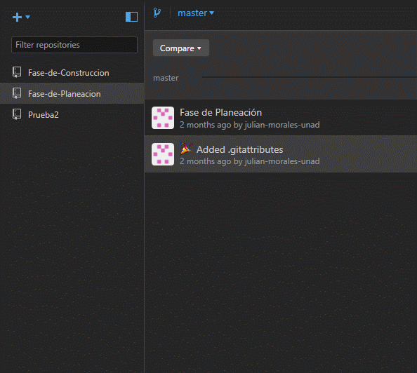
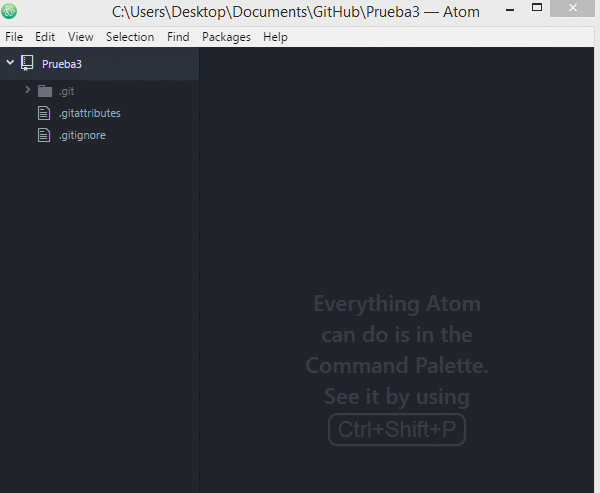
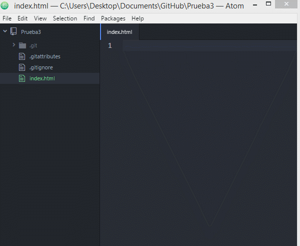
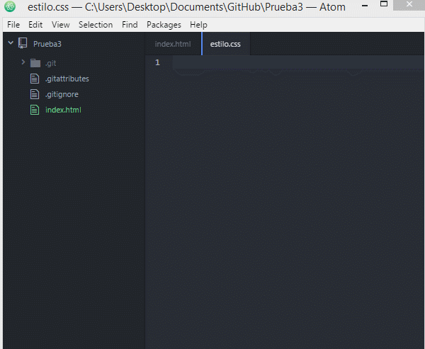
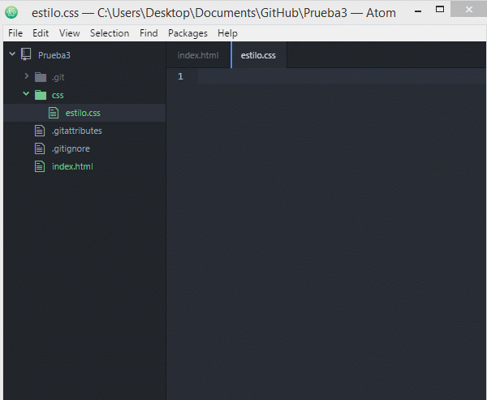

La versión de Github de escritorio, permite crear repositorios de manera rápida e intuitiva.
Existen diferentes editores de texto, unos de los más conocidos son Visual Code, Sublime Text, Atom y Notepad++.
Se dará una breve explicación de cómo utilizar el editor Atom, para crear archivos HTML y CSS, el cual cuenta con soporte para ver modificaciones en los repositorios.
La creación un archivo en Atom es rápida y fácil de entender, al lado derecho tenemos los archivos de una carpeta que hayamos seleccionados, para crear más archivos o carpetas seguimos el siguiente paso:
Los archivos HTML, llevan una estructura muy parecida en todos los archivos por lo cual Atom nos permite incluir las etiquetas básicas de manera rápida:
Primero se crea la carpeta y el archivo donde ira el contenido CSS.
En el archivo CSS se puede indicar los elementos y cambios que se quieren hacer, por ejemplo, cambiar el fondo del documento a color negro y las letras a color blanco.
